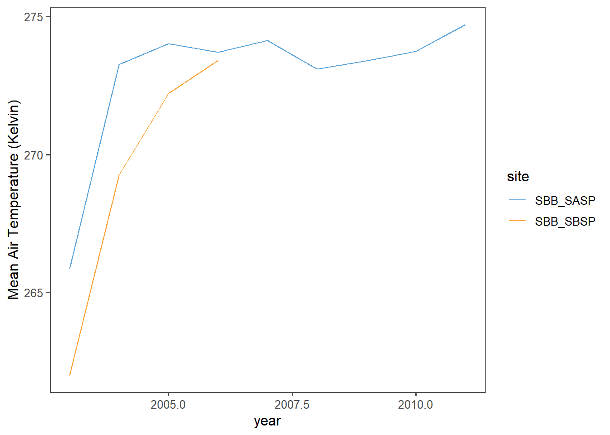
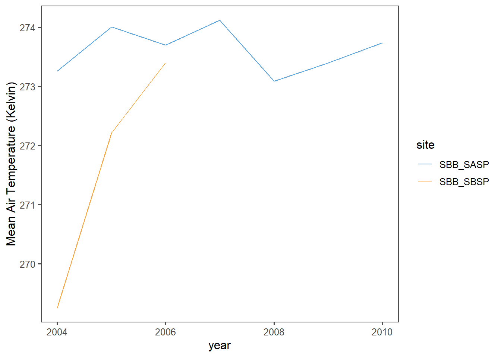
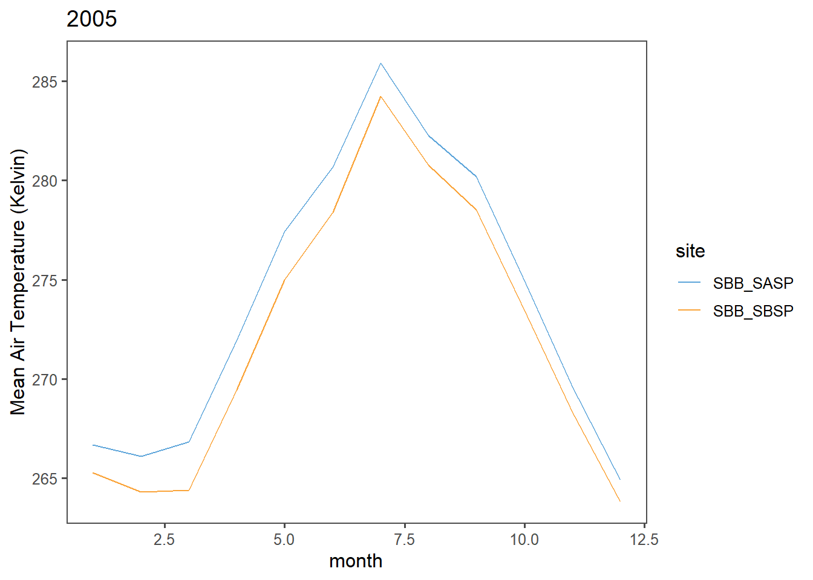
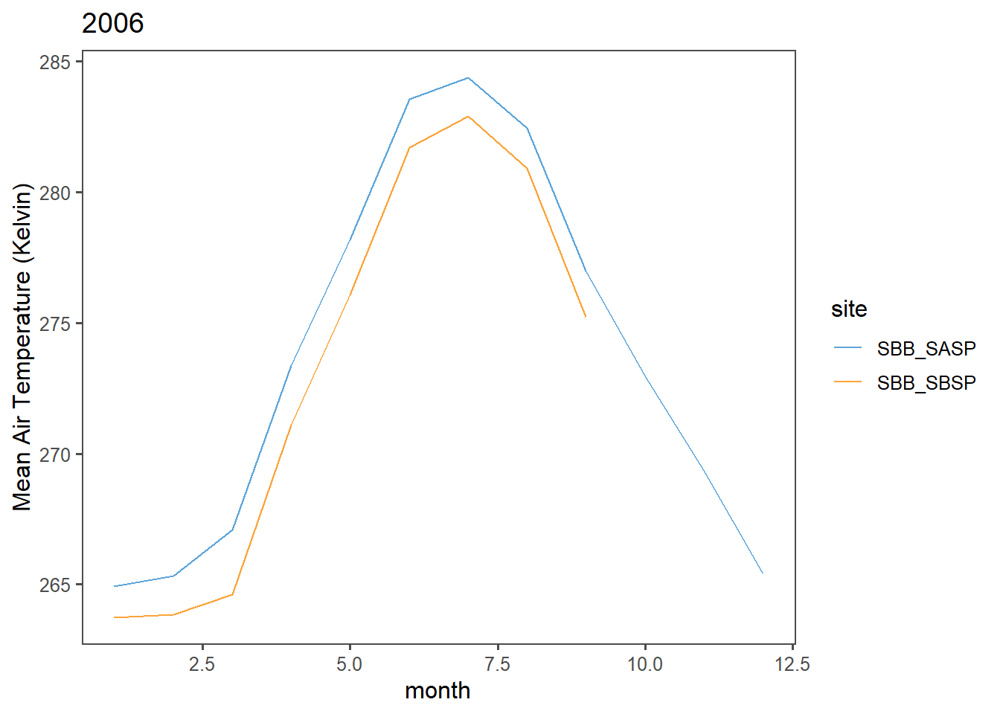
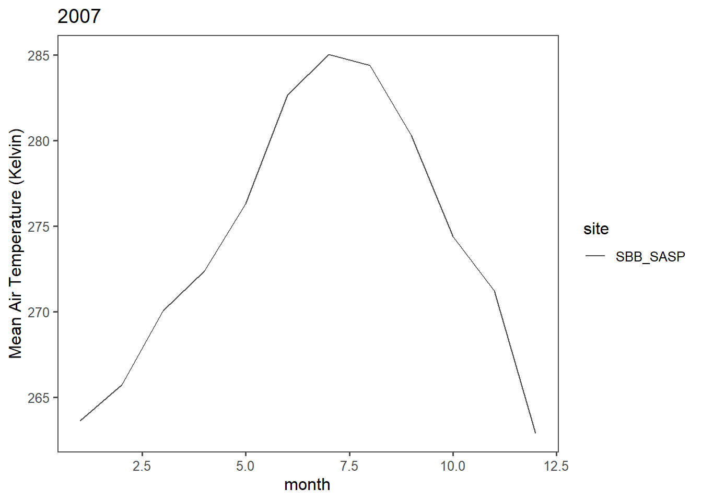
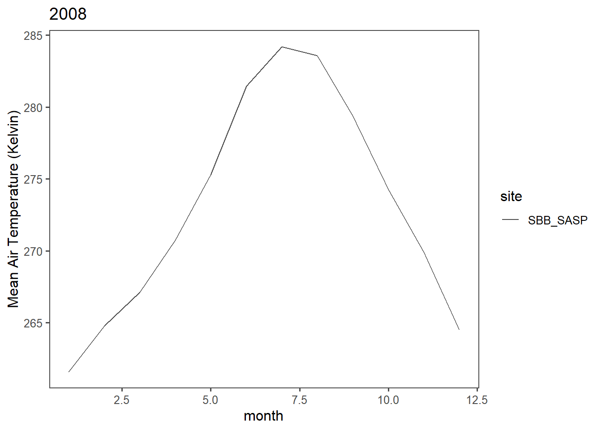
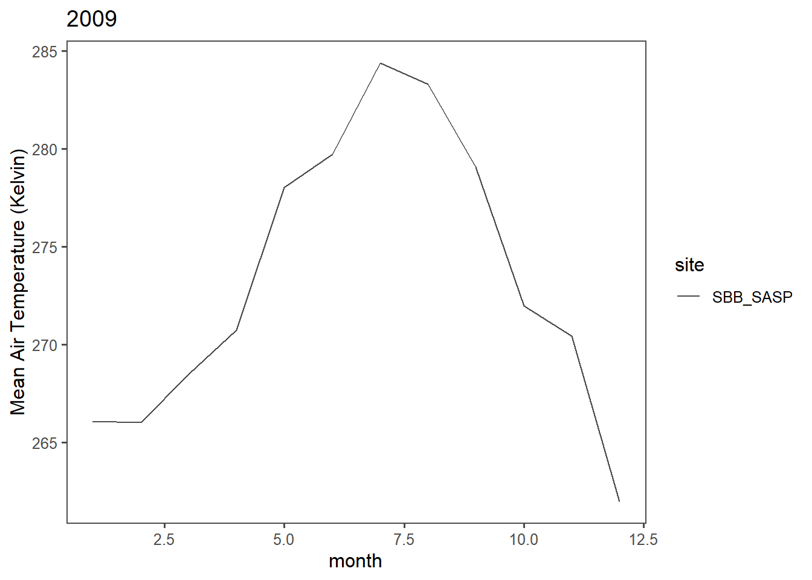
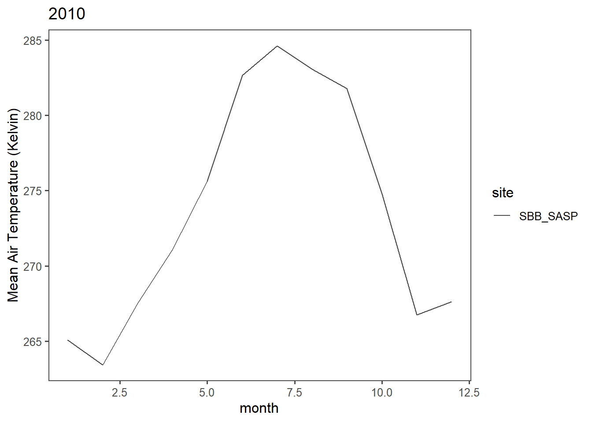

Chapter 4 Snow Data
Assignment 3: Using some simple web-scraping to find links to data files, download data, and analyze it.
4.1 Simple web scraping
R can read html using either rvest, xml, or xml2 packages. Here we are going to navigate to the Center for Snow and Avalance Studies Website and read a table in. This table contains links to data we want to programatically download for three sites. We don’t know much about these sites, but they contain incredibly rich snow, temperature, and precip data.
4.1.1 Reading an html
4.1.1.1 Extract CSV links from webpage
site_url <- 'https://snowstudies.org/archived-data/'
#Read the web url
webpage <- read_html(site_url)
#See if we can extract tables and get the data that way:
# tables <- webpage %>%
# html_nodes('table') %>%
# magrittr::extract2(3) %>%
# html_table(fill = TRUE)
#That didn't work, so let's try a different approach
#Extract only weblinks and then the URLs!
links <- webpage %>%
html_nodes('a') %>%
.[grepl('24hr',.)] %>%
html_attr('href')4.1.2 Data Download
4.1.2.1 Download data in a for loop
setwd("C:/Users/DClev/Documents/ESS580_copied_folder/Bookdown_Proj/Bookdown4/Bookdown-Project")
#Grab only the name of the file by splitting out on forward slashes
splits <- str_split_fixed(links,'/',8)
#Keep only the 8th column
dataset <- splits[,8]
#generate a file list for where the data goes
file_names <- paste0('data_snow/',dataset)
for(i in 1:3){
download.file(links[i],destfile=file_names[i])
}
downloaded <- file.exists(file_names)
# confirming that NOT all files were downloaded:
evaluate <- !all(downloaded)4.1.2.2 Download data in a map
setwd("C:/Users/DClev/Documents/ESS580_copied_folder/Bookdown_Proj/Bookdown4/Bookdown-Project")
#Map version of the same for loop (downloading 3 files)
if(evaluate == T){
map2(links[1:3],file_names[1:3],download.file)
}else{print('data already downloaded')}## [[1]]
## [1] 0
##
## [[2]]
## [1] 0
##
## [[3]]
## [1] 04.1.3 Data read-in
4.1.3.1 Read in just the snow data as a loop
#Pattern matching to only keep certain files
snow_files <- file_names %>%
.[!grepl('SG_24',.)] %>%
.[!grepl('PTSP',.)]
snow_files## [1] "data_snow/SASP_24hr.csv" "data_snow/SBSP_24hr.csv"#empty_data <- list()
# snow_data <- for(i in 1:length(snow_files)){
# empty_data[[i]] <- read_csv(snow_files[i]) %>%
# select(Year,DOY,Sno_Height_M)
# }
#snow_data_full <- do.call('rbind',empty_data)
#summary(snow_data_full)4.1.3.2 Read in the data as a map function
our_snow_reader <- function(file){
name = str_split_fixed(file,'/',2)[,2] %>%
gsub('_24hr.csv','',.)
df <- read_csv(file) %>%
select(Year,DOY,Sno_Height_M) %>%
mutate(site = name)
}
snow_data_full <- map_dfr(snow_files,our_snow_reader)
summary(snow_data_full)## Year DOY Sno_Height_M site
## Min. :2003 Min. : 1.0 Min. :-3.523 Length:12786
## 1st Qu.:2008 1st Qu.: 92.0 1st Qu.: 0.350 Class :character
## Median :2012 Median :183.0 Median : 0.978 Mode :character
## Mean :2012 Mean :183.1 Mean : 0.981
## 3rd Qu.:2016 3rd Qu.:274.0 3rd Qu.: 1.520
## Max. :2021 Max. :366.0 Max. : 2.905
## NA's :45544.2 Assignment:
4.2.0.1 Q1: Extract Data
Extract the meteorological data URLs. Here we want you to use the rvest package to get the URLs for the SASP forcing and SBSP_forcing meteorological datasets.
site_url <- 'https://snowstudies.org/archived-data/'
#Read the web url
webpage <- read_html(site_url)
#Extract only weblinks and then the URLs!
links <- webpage %>%
html_nodes('a') %>%
.[grepl('forcing',.)] %>%
html_attr('href')
links## [1] "https://snowstudies.org/wp-content/uploads/2022/02/SBB_SASP_Forcing_Data.txt"
## [2] "https://snowstudies.org/wp-content/uploads/2022/02/SBB_SBSP_Forcing_Data.txt"4.2.0.2 Q2: Download Data
Download the meteorological data. Use the download_file and str_split_fixed commands to download the data and save it in your data folder. You can use a for loop or a map function.
setwd("C:/Users/DClev/Documents/ESS580_copied_folder/Bookdown_Proj/Bookdown4/Bookdown-Project")
#Grab only the name of the file by splitting out on forward slashes
splits <- str_split_fixed(links,'/',8)
#Keep only the 8th column
dataset <- splits[,8]
#generate a file list for where the data goes
m_file_names <- paste0('data_snow/',dataset)
for(i in 1:2){
download.file(links[i],destfile=m_file_names[i])
}
downloaded <- file.exists(m_file_names)
# confirming that NOT all files were downloaded:
evaluate <- !all(downloaded)m_file_names## [1] "data_snow/SBB_SASP_Forcing_Data.txt" "data_snow/SBB_SBSP_Forcing_Data.txt"4.2.0.3 Q3: Write Read-In Function
Write a custom function to read in the data and append a site column to the data.
# this code grabs the variable names from the metadata pdf file
library(pdftools)
headers <- pdf_text('https://snowstudies.org/wp-content/uploads/2022/02/Serially-Complete-Metadata-text08.pdf') %>%
readr::read_lines(.) %>%
trimws(.) %>%
str_split_fixed(.,'\\.',2) %>%
.[,2] %>%
.[1:26] %>%
str_trim(side = "left")# Writing Read-in Function
our_meteor_reader <- function(file){
name = str_split_fixed(file,'/',2)[,2] %>%
gsub('_Forcing_Data.txt','',.)
df <- read_table(file, col_names = headers) %>%
select(c(1,2,10))%>%
mutate(site = name)%>%
filter_if(is.numeric,all_vars(!is.na(.)))
}4.2.0.4 Q4: Use Map
Use the map function to read in both meteorological files. Display a summary of your tibble.
meteor_data_full <- map_dfr(m_file_names,our_meteor_reader)
summary(meteor_data_full)## year month air temp [K] site
## Min. :2003 Min. : 1.000 Min. :242.1 Length:94467
## 1st Qu.:2005 1st Qu.: 3.000 1st Qu.:266.0 Class :character
## Median :2006 Median : 6.000 Median :272.9 Mode :character
## Mean :2007 Mean : 6.446 Mean :272.9
## 3rd Qu.:2009 3rd Qu.: 9.000 3rd Qu.:279.9
## Max. :2011 Max. :12.000 Max. :295.84.2.0.5 Q5: Line Plot - Average Yearly Temp by Site
Make a line plot of mean temp by year by site (using the air temp [K] variable). Is there anything suspicious in the plot? Adjust your filtering if needed.
# Finding by mean temp by year by site:
line_plot_data <- meteor_data_full%>%
group_by(year,site)%>%
summarise(Mean_Air_Temp = mean(`air temp [K]`))# Creating Line Plot
ggplot(line_plot_data, aes(x = year, y = Mean_Air_Temp, color = site)) +
geom_line() +
ylab('Mean Air Temperature (Kelvin)')+
ggthemes::theme_few() +
ggthemes::scale_color_few()
We can see that data from 2003 looks suspicious. Looking at the data we can see that 2003 data only begins in November. As we don’t have a full year’s worth of data, we should filter this data out from our analysis here. Also, looking at 2011, we see that the data ends on October 1st, and so 2011 should also be filtered out. However, further, it appears that data prior to 2005 is significantly different than after. The data before 2005 should be scrutinized. It may be best to also filter out all data prior to 2005.
4.2.0.5.1 Refiltering and Replotting:
ann_line_plot_data <- meteor_data_full%>%
filter(year > 2003, year <2011)%>%
group_by(year,site)%>%
summarise(Mean_Air_Temp = mean(`air temp [K]`))
# Creating Line Plot after refiltering
ggplot(ann_line_plot_data, aes(x = year, y = Mean_Air_Temp, color = site)) +
geom_line() +
ylab('Mean Air Temperature (Kelvin)')+
ggthemes::theme_few() +
ggthemes::scale_color_few()
(It may be that data for SBB_SBSP is unreliable prior to 2005.)
4.2.0.6 Q6: Write Plotting Function
Write a function that makes line plots of monthly average temperature at each site for a given year. Use a for loop to make these plots for 2005 to 2010. Are monthly average temperatures at the Senator Beck Study Plot ever warmer than the Snow Angel Study Plot? Hint: https://ggplot2.tidyverse.org/reference/print.ggplot.html
years <- (2005:2010)
plot_fun <- function(year_input){
year_input <- years[i]
plot_fun_data <- meteor_data_full%>%
group_by(year,month,site)%>%
summarise(monthly_ave_temp = mean(`air temp [K]`))%>%
filter(year == year_input)
print(ggplot(plot_fun_data, aes(x = month, y = monthly_ave_temp, color = site)) +
geom_line() +
ggtitle(year_input) +
ylab('Mean Air Temperature (Kelvin)')+
ggthemes::theme_few() +
ggthemes::scale_color_few())
}
for(i in 1:length(years)){
plot_fun(years[i])
}
Bonus: Make a plot of average daily precipitation by day of year (averaged across all available years). Color each site.
Bonus #2: Use a function and for loop to create yearly plots of precipitation by day of year. Color each site.